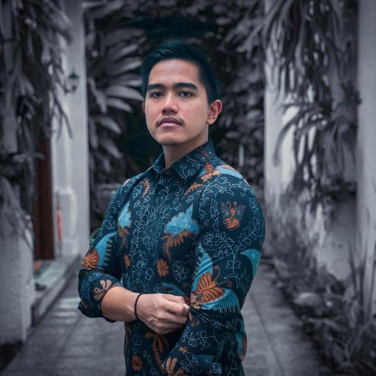
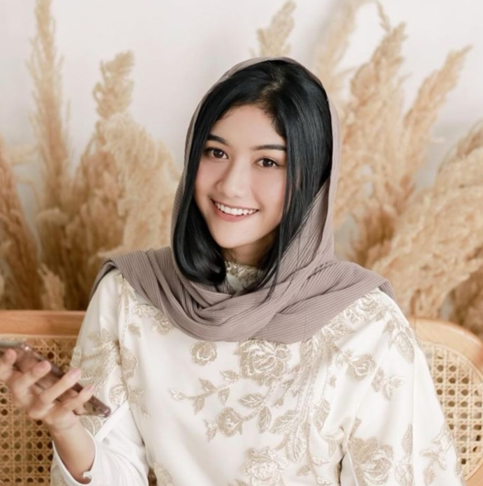
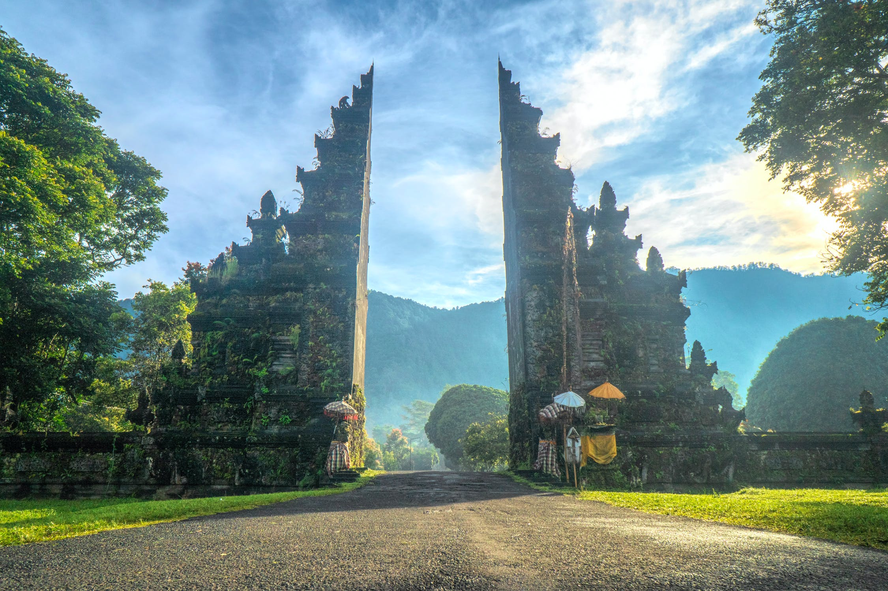
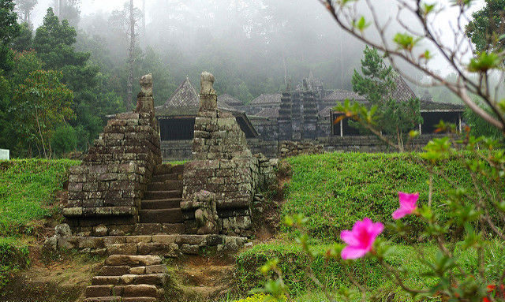

digelar pada 10-11 Desember 2022, di mana akad nikah dilakukan di Yogyakarta
Oleh sebab itu dengan hormat kami menggundang bapak ibu untuk segera hadir pada acara kami
Kaesang Pangarep


Erina Gudono
Cerita Cinta
Di sini Anda dapat menikmati berbagai cerita cinta yang memikat hati.
Cerita 1 :Kaesang dan Erina adalah pasangan yang memiliki kisah cinta yang indah. Mereka pertama kali bertemu di sebuah kafe di Jakarta, dan dari situlah kisah cinta mereka dimulai.

Cerita 2: Kaesang dan Erina telah melewati banyak petualangan bersama. Mereka sering melakukan perjalanan ke berbagai tempat indah di seluruh Indonesia. Keindahan alam dan kebersamaan mereka selalu menjadi kenangan yang tak terlupakan.

Cerita 3: Kaesang dan Erina telah merencanakan masa depan mereka bersama. Mereka bercita-cita memiliki rumah yang indah dan keluarga yang bahagia. Dengan cinta dan tekad, mereka siap mengarungi perjalanan hidup bersama.